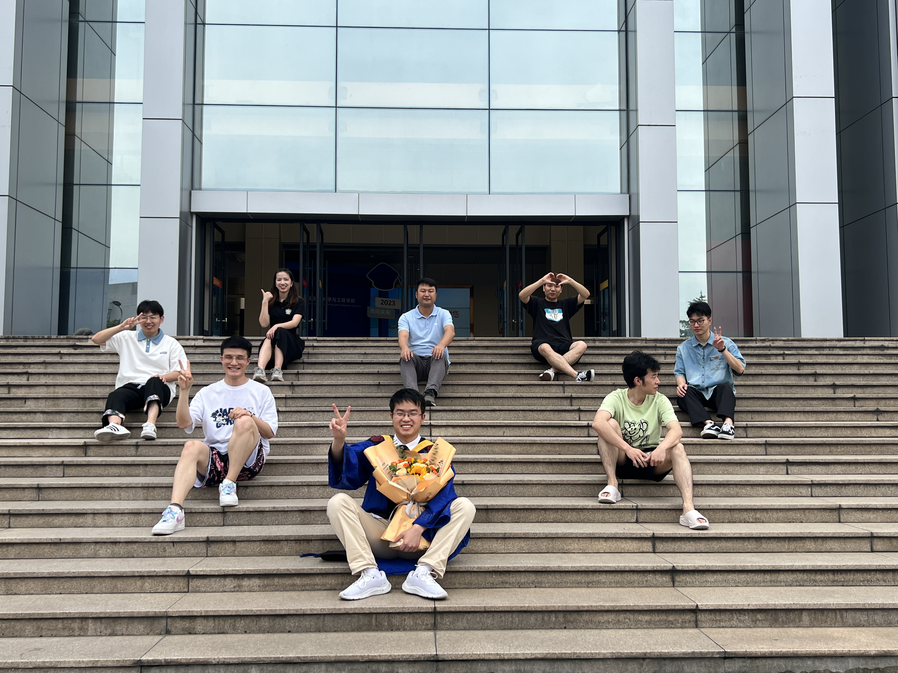
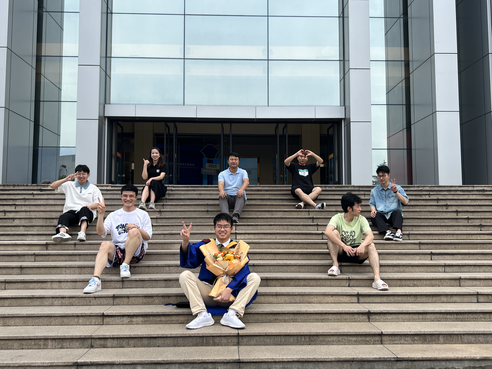

Biography
宁波大学，副教授，2016年毕业于华东师范大学计算机系，模式识别与机器学习小组，导师孙仕亮教授（师从清华大学国内机器学习顶级专家张长水教授和伦敦大学国际知名专家联合国教科文组织AI主席John Shawe-taylor教授）。在校教授的课程有：面向对象程序设计，高级算法设计，概率统计等。目前研究方向包括多视图学习 , 聚类 , 降维，支持向量机 , 计算机视觉与深度学习。在国际著名期刊如IEEE TKDE, IEEE TC，IEEE TNNLS，Information Fusion，Neurocomputing，Expert Systems with Applications，Pattern Recognition等期刊和会议上发表30余篇论文。获得上海市自然科学奖二等奖，并担任多个国际期刊的审稿人，欢迎有志于人工智能研究方向的学者和技术人员参与合作，学生报考研究生。
Xijiong Xie received the Ph.D. degree from the Pattern Recognition and Machine Learning Research Group, Department of Computer
Science and Technology, East China Normal University, in 2016. He is currently an Associate Professor with the Faculty of Electrical
Engineering and Computer Science, Ningbo University, China. He has over 30 publications at peer-reviewed journals and conferences in
his research areas, such as IEEE TRANSACTIONS ON KNOWLEDGE AND DATA ENGINEERING (TKDE), IEEE TRANSACTIONS ON
NEURAL NETWORKS AND LEARNING SYSTEMS (TNNLS), IEEE TRANSACTIONS ON CYBERNETICS, Expert systems with application, Pattern Recognition,
Neurocomputing, Knowledge-Based Systems and Information Fusion. His research interests include kernel methods, support vector machines, multi-view learning, and deep learning.
Professional Activities
Projects and Patents
-
2020.1-2022.10 一般多视图核机的监督和半监督学习方法的研究
principal, 国家自然科学基金/青年项目, [结题].
-
2018.1-2020.12 多视角迁移特征提取和分类方法的研究
principal, 省自然科学基金/青年基金项目, [结题].
-
2018.1-2018.12 基于双支持向量机的域适应方法的研究
principal, 浙江大学CAD&CG国家重点实验室开放基金, [结题].
-
袁明汶, 钱江波, 辛宇, 谢锡炯, 陈海明, 一种基于深度学习的全卷积网络的哈希检索方法, 2019.01 CN201910801726.8
-
寿震宇, 钱江波, 辛宇, 谢锡炯, 陈海明, 一种基于深度学习的文本哈希检索方法, 2019.01 CN201910983514.6
-
孙仕亮, 董超, 谢锡炯, 一种基于梯度下降法的多视图GEPSVM网页分类算法, 2016.01 CN201610307835.0
Publications [Code]
-
Zhiwen Cao, Xijiong Xie*,
Structure Learning with Consensus Label Information for Multi-View Unsupervised Feature Selection, Expert Systems With Applications, (2023)[Code].
-
Yuqi Li*, Wenting Yin, Jiabao Li, Xijiong Xie,
Physics-based Efficient Full Projector Compensation using only Natural Images, IEEE Transactions on Visualization and Computer Graphics, (2023)[Code].
-
Zhiwen Cao, Xijiong Xie*,Feixiang Sun,
Joint Learning of Graph and Latent Representations for Unsupervised Feature Selection, Applied Intelligence, (2023)[Code].
-
Zhiwen Cao, Xijiong Xie*,Feixiang Sun,
Adaptive unsupervised feature selection with robust graph Regularization, International Journal of Machine Learning and Cybernetics, (2023)[Code].
-
Chunling Lou, Xijiong Xie*,
Multi-view intuitionistic fuzzy support vector machines with insensitive pinball loss for classification of noisy data, Neurocomputing, (2023)[Code].
-
Zhiwen Cao, Xijiong Xie*, Feixiang Sun, Jiabei Qian,
Consensus cluster structure guided multi-view unsupervised feature selection, Knowledge-Based Systems, (2023)[Code].
-
Xijiong Xie*, Feixiang Sun,
Laplacian generalized elastic net Lp-norm nonparallel support vector machine for semi-supervised classification, Neural Computing and Applications, (2023)[Code].
-
Xijiong Xie*, Feixiang Sun, Jiangbo Qian, Lijun Guo, Rong Zhang, Xulun Ye, Zhijin Wang,
Laplacian Lp norm least squares twin support vector machine, Pattern Recognition, (2023)[Code].
-
Jian-Xin Ren, Yu-Jie Xiong*, Xi-Jiong Xie, Yu-Fan Dai1,
Learning Transferable Feature Representation with Swin Transformer for Object Recognition,
Neural Processing Letters, (2023).
-
Feixiang Sun, Xijiong Xie*,
Deep Non-Parallel Hyperplane Support Vector Machine for Classification,
IEEE Access 11: 7759-7761, (2023) [Code].
-
Xijiong Xie*, Yanfeng Li, Shiliang Sun,
Deep multi-view multiclass twin support vector machines,
Information Fusion 91: 80-92 (2023)[Code].
-
Liming Zhao, Lijun Guo, Rong Zhang, Xijiong Xie, Xulun Ye,
mmGaitSet: multimodal based gait recognition for countering carrying and clothing changes,
Applied Intelligence 52(2): 2023-2036 (2022).
-
Xijiong Xie, Yujie Xiong,
Generalized multi-view learning based on generalized eigenvalues proximal support vector machines,
Expert systems with application 194: 116491 (2022).
-
Feixiang Sun, Xijiong Xie, Jiangbo Qian, Yu Xin, Yuqi Li, Chong Wang, Guoqing Chao,
Multi-view k-proximal plane clustering,
Applied Intelligence 52(13): 14949-14963 (2022)[Code].
-
Bolin Zhang, Jiangbo Qian, Xijiong Xie, Yu Xin, Yihong Dong,
CapsNet-based supervised hashing,
Applied Intelligence 51(8): 5912-5926 (2021).
-
Xijiong Xie,
Sampling Active Learning Based on Non-parallel Support Vector Machines,
Neural Processing Letters 53(3): 2081-2094 (2021).
-
Xijiong Xie, Shiliang Sun,
General multi-view semi-supervised least squares support vector machines with multi-manifold regularization,
Information Fusion 62: 63-72 (2020).
-
Xijiong Xie,
Multi-view semi-supervised least squares twin support vector machines with manifold-preserving graph reduction,
International Journal of Machine Learning and Cybernetics 11(11): 2489-2499 (2020).
-
Xijiong Xie, Shiliang Sun
Multi-View Support Vector Machines with the Consensus and Complementarity Information,
IEEE TRANSACTIONS ON KNOWLEDGE AND DATA ENGINEERING 132(12): 2401-2413 (2020)[Code].
-
Xijiong Xie, Huahui Chen, Jiangbo Qian,
Twin maximum entropy discriminations for classification,
Applied Intelligence 49(6): 2391-2399 (2019).
-
Xijiong Xie, Shiliang Sun,
General multi-view learning with maximum entropy discrimination,
Neurocomputing 332: 184-192 (2019).
-
Ping Huang, Xijiong Xie, Shiliang Sun,
Multi-view Opinion Mining with Deep Learning,
Neural Processing Letters 50(2): 1451-1463 (2019).
-
Renjie Wu, Yuqi Li, Xijiong Xie, Zhijie Lin,
Optimized Multi-Spectral Filter Arrays for Spectral Reconstruction,
Sensors 19(13): 2905 (2019).
-
Shiliang Sun, Xijiong Xie, Chao Dong,
Multiview Learning With Generalized Eigenvalue Proximal Support Vector Machines,
IEEE TRANSACTIONS ON CYBERNETICS 49(2): 688-697 (2019).
-
Xijiong Xie,
Regularized multi-view least squares twin support vector machines,
Applied Intelligence 48(9): 3108-3115 (2018).
-
Xijiong Xie, Shiliang Sun, Huahui Chen, Jiangbo Qian,
Domain Adaptation with Twin Support Vector Machines,
Neural Processing Letters 48(2): 1213-1226 (2018).
-
Xijiong Xie,
Sparse Least Squares Twin Support Vector Machines with Manifold-preserving Graph Reduction,
7th International Conference on Pattern Recognition Applications and Methods
-
Xijiong Xie, Shiliang Sun,
PAC-Bayes bounds for twin support vector machines,
Neurocomputing 234: 137-143 (2017).
-
Jing Zhao, Xijiong Xie, Xin Xu, Shiliang Sun,
Multi-view learning overview: Recent progress and new challenges,
Information Fusion 38: 43-54 (2017).
-
Shiliang Sun, Xijiong Xie, Mo Yang,
Multiview Uncorrelated Discriminant Analysis,
IEEE TRANSACTIONS ON CYBERNETIC 46(12): 3272-3284 (2016).
-
Shiliang Sun, Xijiong Xie,
Semisupervised Support Vector Machines With Tangent Space Intrinsic Manifold Regularization,
IEEE TRANSACTIONS ON NEURAL NETWORKS AND LEARNING SYSTEM 27(9): 1827-1839 (2016).
-
Min Yin, Xijiong Xie, Shiliang Sun*,
Key Course Selection in Academic Warning with Sparse Regression,
CCPR (1) 2016: 731-741.
-
Xijiong Xie, Shiliang Sun,
Multi-view twin support vector machines,
Intelligent Data Analysis 19(4): 701-712 (2015).
-
Xijiong Xie, Shiliang Sun,
Multitask centroid twin support vector machines,
Neurocomputing 149: 1085-1091 (2015).
-
Xijiong Xie, Shiliang Sun,
PAC-Bayes Analysis for Twin Support Vector Machines,
International Joint Conference on Neural Networks 2015: 1-6.
-
Xijiong Xie, Shiliang Sun,
Multi-view Laplacian twin support vector machines,
Applied Intelligence 41(4): 1059-1068 (2014).
-
Xijiong Xie, Shiliang Sun,
Multi-view clustering ensembles,
International Conference on Machine Learning and Cybernetics 2013: 51-56.
-
Xijiong Xie, Shiliang Sun,
Multitask Twin Support Vector Machines,
International Conference on Neural Information Processin 2012: 341-348.
Award
Competitions
- 第十九届华为杯数学建模竞赛 (二等奖)。
- 第十八届华为杯数学建模竞赛 (三等奖)。
News
- 研究生曹智文发表一篇名为《Structure learning with consensus label information for multi-view unsupervised feature selection》在中科院一区期刊Expert Systems With Applications。
- 研究生曹智文发表一篇名为《Joint Learning of Graph and Latent Representations for Unsupervised Feature Selection》在中科院二区期刊Applied Intelligence。
- 研究生曹智文发表一篇名为《Adaptive unsupervised feature selection with robust graph Regularization》在中科院三区期刊International Journal of Machine Learning and Cybernetic。
- 研究生楼春玲发表一篇名为《Multi-view intuitionistic fuzzy support vector machines with insensitive pinball loss for classification of noisy data》在中科院二区期刊Neurocomputing。
- 研究生曹智文发表一篇名为《Consensus Cluster Structure Guided Multi-View Unsupervised Feature Selection》在中科院二区期刊Knowledge-Based Systems。
- 研究生孙飞翔发表一篇名为《Laplacian generalized elastic net Lp-norm nonparallel support vector machine for semi-supervised classification》在中科院三区期刊Neural Computing and Applications。
- 研究生孙飞翔发表一篇名为《Deep Non-Parallel Hyperplane Support Vector Machine for Classification》在中科院四区期刊IEEE Access。
- 研究生孙飞翔发表一篇名为《Laplacian Lp norm least squares twin support vector machine》在中科院一区期刊Pattern Recognition。
- 研究生李彦锋发表一篇名为《Deep multi-view multiclass twin support vector machines》在中科院一区期刊Information Fusion。
- 研究生孙飞翔发表一篇名为《Multi-view k-proximal plane clustering》在中科院二区期刊Applied Intelligence。
Daily Life
 

Students
- 孙飞翔(2020级研究生)
- 李彦峰(2021级研究生)
- 曹智文(2021级研究生)
- 楼春玲(2021级研究生)
- 陈航宇(2022级研究生)
- 鲁俊旗(2022级研究生)
- 徐盛轲(2022级研究生)
- 宿熙隆(2022级研究生)
- 卞英杰(2022级研究生)
- 王博远(2022级研究生)
- 许敏(2023级研究生)
- 蒋剑军(2023级研究生)
- 戴嘉珉(2023级研究生)